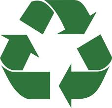

O que é Reciclagem
Reciclagem é o processo que visa transformar materiais usados em novos produtos com vista a sua reutilização. Por este processo, materiais que seriam destinados ao lixo permanente podem ser reaproveitados. É um termo que tem sido cada vez mais utilizado como alerta para a importância da preservação dos recursos naturais e do meio ambiente. O conceito de reciclagem serve apenas para os materiais que podem voltar ao estado original e ser transformado novamente em um produto igual em todas as suas características. O conceito de reciclagem é diferente do de reutilização. O reaproveitamento ou reutilização consiste em transformar um determinado material já beneficiado em outro. Um exemplo claro da diferença entre os dois conceitos, é o reaproveitamento do papel. A palavra reciclagem difundiu-se na mídia a partir do final da década de 1980, quando foi constatado que as fontes de petróleo e de outras matérias-primas não renováveis estavam se esgotando rapidamente, e que havia falta de espaço para a disposição de lixo e de outros dejetos na natureza.
